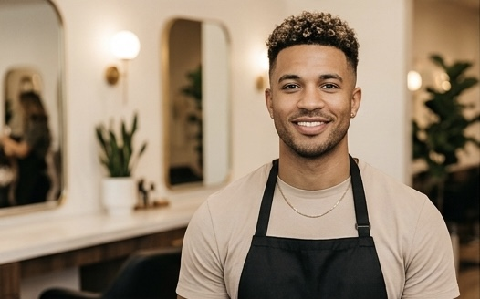
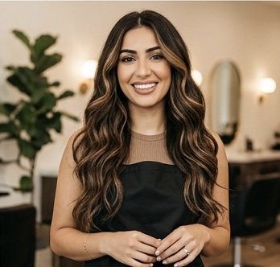

Meet the people behind the work
Each artist at Velo brings a distinct perspective and specialized skill set. Together, we cover the full spectrum of hair artistry — from precision cuts to vivid color, from curl care to classic grooming.

Marcus
Founder & Creative DirectorMarcus founded Velo in 2012 after training under master stylists in Chicago, New York, and London. His philosophy — that a great cut begins with deep listening — has shaped the culture of every chair in the studio. With 20+ years of experience and a background in editorial styling, Marcus specializes in transformative cuts that honor the natural movement of hair.

Nia
Senior StylistWith an intuitive eye for shape and proportion, Nia has built a loyal following for her ability to translate a client's vision into something even better than imagined. A graduate of the Aveda Institute and advanced styling programs in Toronto, she brings warmth, precision, and creative fearlessness to every appointment.

Sarah
Wave & Texture SpecialistSarah is Velo's resident wave and texture expert, with a particular genius for lived-in, effortlessly beautiful styles. Her specialty is the shag — that perfect combination of layers, movement, and personality — but she's equally gifted at any style that calls for softness and dimension. Clients travel from across Michigan to sit in her chair.
David
Fade SpecialistDavid's precision with clippers is unmatched in Ann Arbor. Trained in classic barbering and modern fade technique, he brings an architectural sensibility to every men's cut. His fades are clean, his tapers are crisp, and his attention to detail is obsessive in the best possible way. A mainstay at Velo since 2016.

Elena
Master ColoristElena is the color architect of Velo — a Wella Master Colorist with a signature approach to dimensional, lived-in color that looks natural even when it's anything but. From platinum transformations to subtle shadow roots, she navigates the full spectrum with technical mastery and an artist's instinct for what will truly flatter. Her balayage work is coveted.

Julian
Master BarberJulian brings the art of the classic barber shop to the boutique salon world. His approach is deeply traditional — meticulous, unhurried, and respectful of the rituals of men's grooming — but his sense of style is entirely modern. His beard sculpts are architectural and his hot towel shaves are, clients say, genuinely life-changing.

Kassa
Texture & Natural Hair ArtistKassa is Velo's expert in natural and textured hair, with specialized training in curl science, loc care, and protective styling. She believes that textured hair is not a challenge to be managed but a gift to be celebrated — and her work reflects that philosophy in every appointment. She's also a passionate educator, running workshops on natural hair care throughout the year.